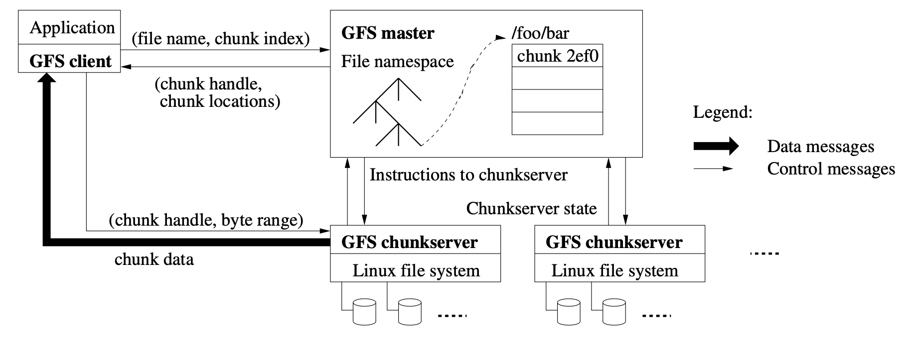

哲学家吃饭问题 (E. W. Dijkstra, 1960)
经典同步问题：哲学家 (线程) 有时思考，有时吃饭
- 吃饭需要同时得到左手和右手的叉子
- 当叉子被其他人占有时，必须等待，如何完成同步？

失败与成功的尝试
失败的尝试
- 把信号量当互斥锁：先拿一把叉子，再拿另一把叉子
成功的尝试 (万能的方法)
#define CAN_EAT (avail[lhs] && avail[rhs])
mutex_lock(&mutex);
while (!CAN_EAT)
cond_wait(&cv, &mutex);
avail[lhs] = avail[rhs] = false;
mutex_unlock(&mutex);
mutex_lock(&mutex);
avail[lhs] = avail[rhs] = true;
cond_broadcast(&cv);
mutex_unlock(&mutex);
成功的尝试：信号量
Trick: 死锁会在 5 个哲学家 “同时吃饭” 时发生
- 破坏这个条件即可
- 保证任何时候至多只有 4 个人可以吃饭
- 直观理解：大家先从桌上退出
- 袋子里有 4 张卡
- 拿到卡的可以上桌吃饭 (拿叉子)
- 吃完以后把卡归还到袋子
- 任意 4 个人想吃饭，总有一个可以拿起左右手的叉子
- 教科书上有另一种解决方法 (lock ordering；之后会讲)
但这真的对吗？
- philosopher-check.py
- 在必要的时候使用 model checker
反思：分布与集中
“Leader/follower” - 有一个集中的 “总控”，而非 “各自协调”
- 在可靠的消息机制上实现任务分派
- Leader 串行处理所有请求 (例如：条件变量服务)
void Tphilosopher(int id) {
send(Twaiter, id, EAT);
receive(Twatier); // 等待 waiter 把两把叉子递给哲学家
eat();
send(Twaiter, id, DONE); // 归还叉子
}
void Twaiter() {
while (1) {
(id, status) = receive(Any);
switch (status) { ... }
}
}
反思：分布与集中 (cont'd)
你可能会觉得，管叉子的人是性能瓶颈
- 一大桌人吃饭，每个人都叫服务员的感觉
- Premature optimization is the root of all evil (D. E. Knuth)

- 吃饭的时间通常远远大于请求服务员的时间
- 如果一个 manager 搞不定，可以分多个 (fast/slow path)
- 把系统设计好，集中管理可以不是瓶颈：The Google File System (SOSP'03) 开启大数据时代